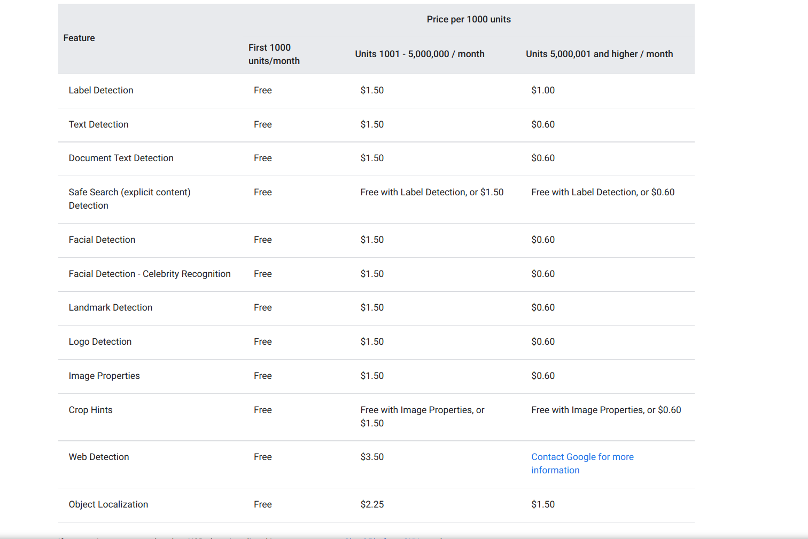

A comparison of different Face Detection APIs in the industry
Why do we need an opensource face detection APIs ?
Consider we have around 80,000 videos which consists of around a total of 72 million frames. Below is an analysis of how different competitor’s face detection APIs would cost for 72 million frames. Some people have a myth that opensource models don’t work that well compared to these premium services. I’ve also shared a few test screenshots on how even premium service give false positives.
Google Cloud Vision
Pricing | Cloud Vision API | Google Cloud
They charge $1.0/block for more than 5,000,000 units
1000 units in one block

Total API cost = 1.5 * 5,000,000/1000 + 0.6 * 67,000,000/1000 = 47700 (for facial detection feature)
Each feature has a cost

How it looks

Notes:
Doesn’t support age/gender/race prediction
Has brand/logo detection
AWS reckognition
Amazon Rekognition - Pricing - AWS
label detection

Image detection pricing

Group 1: CompareFaces, IndexFaces, SearchFacebyImage, SearchFaces APIs.
Group 2: DetectFaces, DetectModerationLabels, DetectLabels, DetectText, RecognizeCelebrities, DetectProtectiveEquipment APIs.
0.001 * 1,000,000 + 0.008 * 4,000,000 + 0.006 * 30,000,000 + 0.004 * 35,000,000 = $353,000
video detection pricing

1 video = 0.5min = 40000 min for 80k videos
= $8000 for each feature needed
Microsoft Vision API
Computer Vision | Microsoft Azure

Feature

= 0.54 * 72,000,000 / 1000 = $38,880 per feature
Inferdo

Notes:-
Has only age, gender detection
KairOs
Kairos Facial Recognition Demos


$249 plan ⇒
249 + 0.002*72,000,000 = $144249
Notes:
Performance looks same like open source alternatives
Face++


Notes:
Face++ has highly accurate results, better than amazon/ google vision We would still need 75 million*1.5 queries to use this
For $1000, a month would have 2,628,288 seconds, i.e at max we could do 2,628,288 queries with a single QPS
If we have 64 QPS, it should be 75,000,000/64 = 1,171,875 seconds = 12 days
Which again goes for like $1001264 = $76800

Conclusion
For video data, only amazon rekognition API looks cheaper ($0.1/min)
But the AWS API is slower (more than 8min/video) to process than my local machine itself, so it cannot be completed within 15 days
Also, the AWS API doesn’t have that great results compared to face++, it is more or like my opensource models
Coming back to my version, It takes around 1min/video to process on GPU using the current system.
For 80k videos = 80kmins
Considering I parallelize using 4GPUs, It should be 80,000/4 = 20,000 mins = 14 days
If we look at GPU instances

1 GPU could run 2 models ⇒ 4 can run 8 (g5.12xlarge)
80000/4 = 20000 mins = 14 days = 350 hrs * $5.672 = $1985.2
If we look at CPU instances (c6gd.12xlarge)
But I’m thinking as CPU servers should be cheaper, Using 48 vcpus, and considering 4vcpus for each process, total scripts I can run in parallel = 48/4 = 12
It should be 80,000 mins ⇒ 80,000/12 = 6,666.66 mins = 5 days
5 days = 120 hrs = 120*1.8432 = $222